The best part about a smaller city in Guangdong Province is the fact that most people out here speak Cantonese. Also, there's just random things to do.
Take, for one, this chicken museum. Qingyuan is famous for its chicken, and there is an entire museum dedicated to the processing of chicken, and its use in different stews.
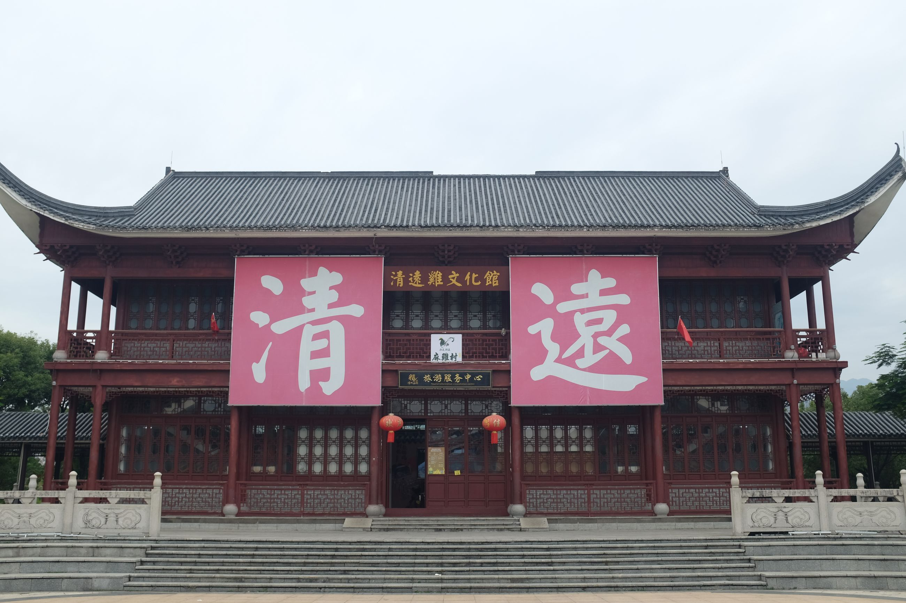
The Chicken Museum is situated in what was once a "fun park" (think random good and game stalls, with children's rides) but now is a collection of mostly abandoned rides and stalls. It looks sad in the day; I imagine it looks spooky at night. Things are in disrepair, and the operating stalls are worn down. We find one with ladle-fishing -- scooping up fish -- and the owner, upon hearing we don't want to keep the fish we catch, lets us feed the fish.
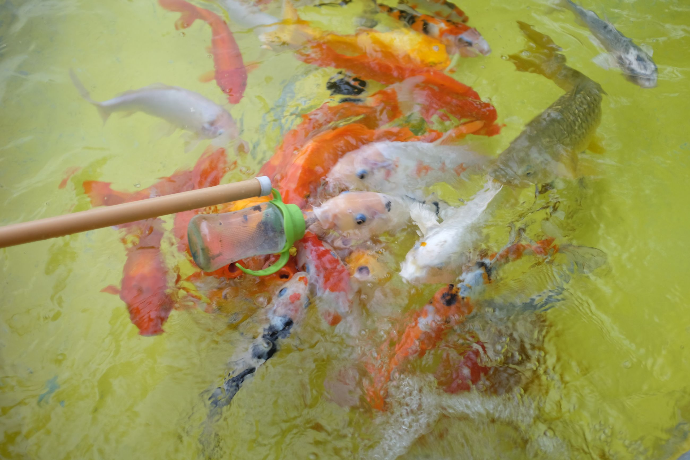 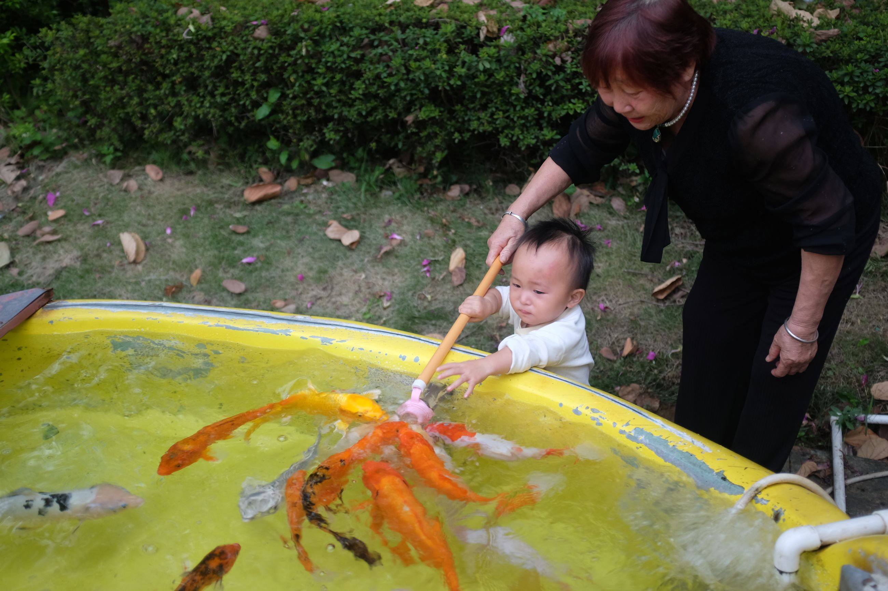
China is also home to these amusement park-style parks. Essentially, there is a designated hiking trail that goes through the entire park, and it's a mix of hiking, sightseeing, but also thrill-rides on a small scale. Because of that composition, there is something for everybody. Let me walk you through it.
The first major feature of this fever dream is that it is dinosaur-themed. The reason for that is because the old valley was called "Old Dragon Valley". So they decided to make it dinosaur themed.
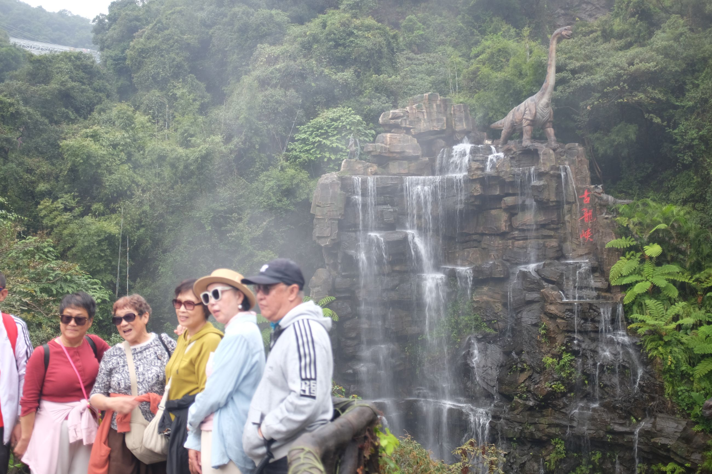 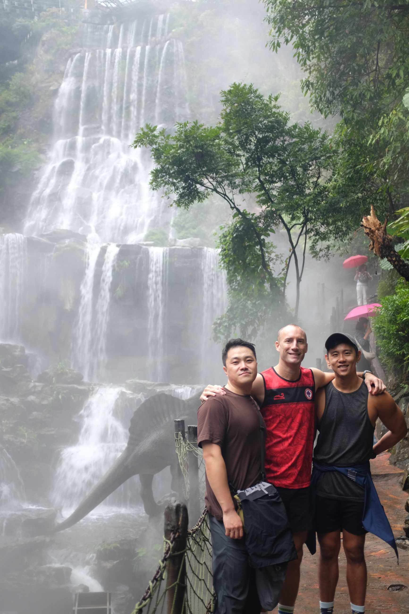
Have you seen those videos of people scarily crossing a glass bridge? Well, they have those too.
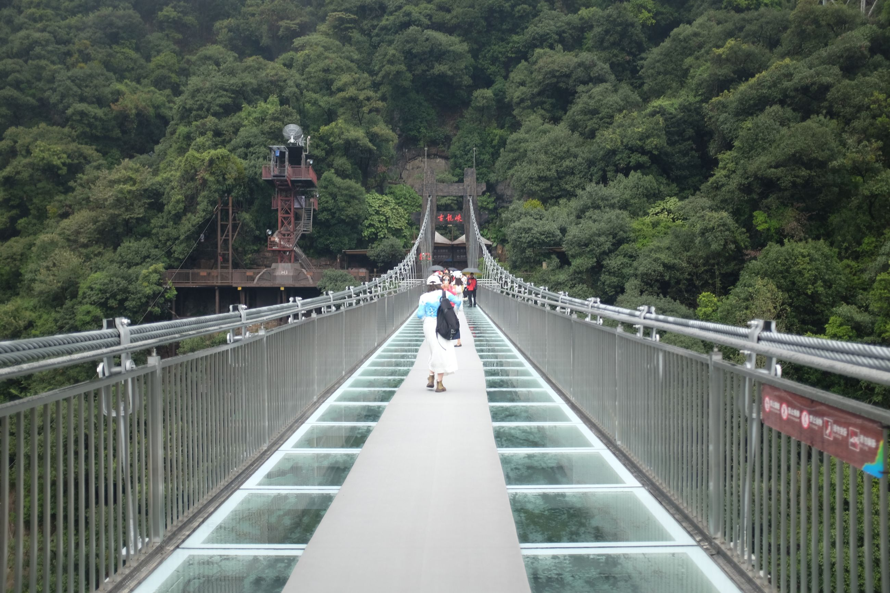 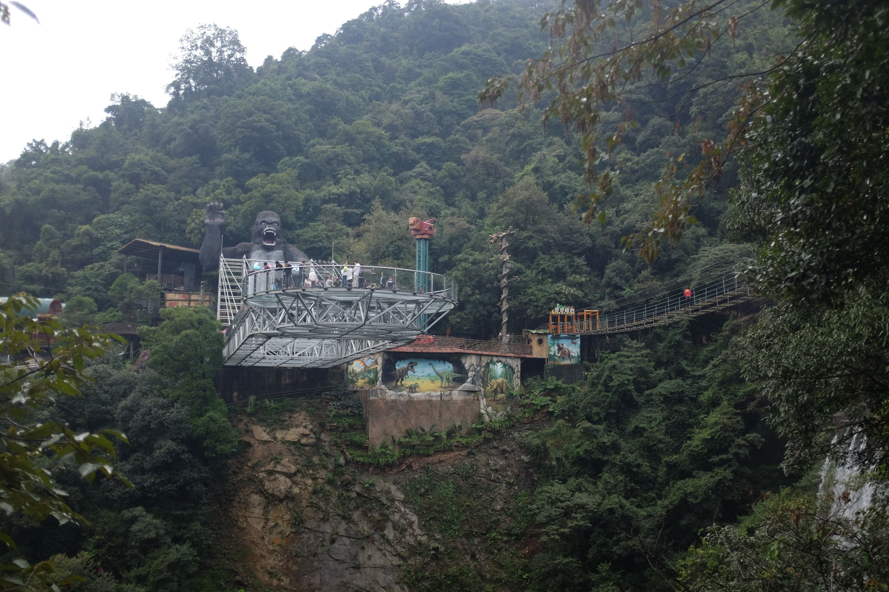
The more you follow the designated trail, the more you get to experience the mountain.
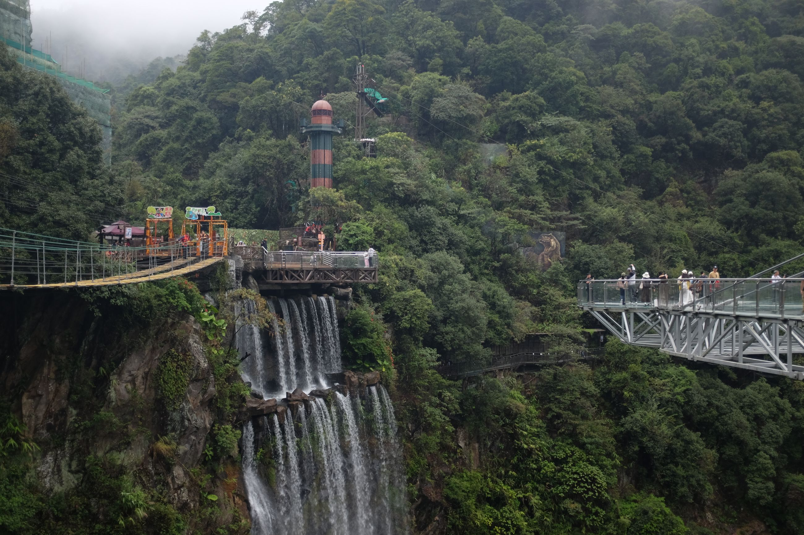 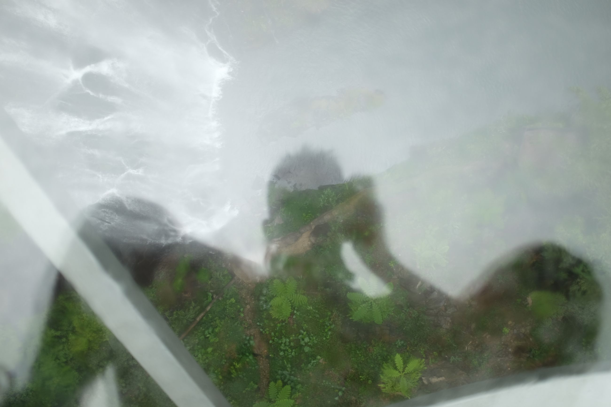
For the willing and thrilling, there is also a free-drop ride, but only on a small scale.
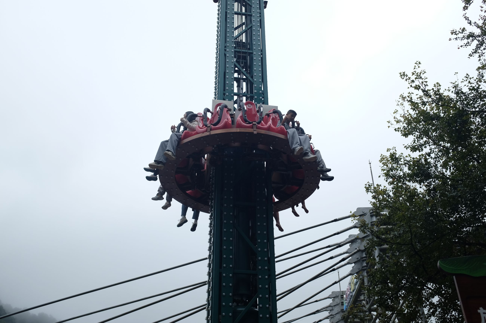
The best part of the entire experience was, once you got to the top, you could take a small go-cart to the base of the mountain. This followed a designated track, and used gravity to pull you down. Video below.
Last year, I went to Shaoguan which is just further north of Qingyuan. That one didn't have fancy amusement parks, but a hiking trail through the mountain. Going through these two places, you really get to appreciate the nature around Guangdong Province -- it feels like southeast Asia with its dense brush and heat. On our way back from the dinosaur park to the resort, the clouds clear up.
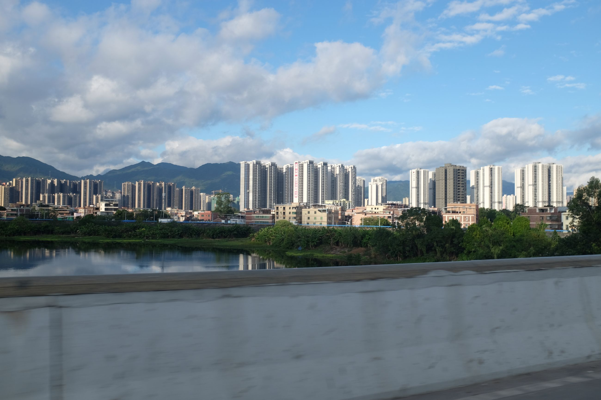